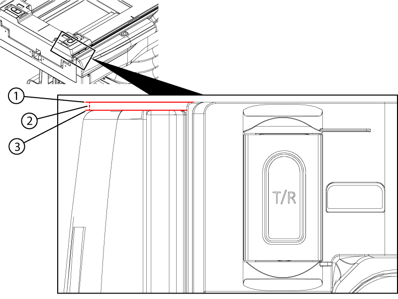
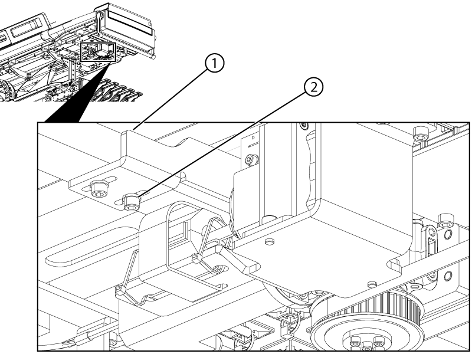

Sets the cradle home switch to actuate properly when the cradle is at the home position.
Prerequisites
Personnel requirements
Required persons
Preliminary requirements
Procedure
Finalization
1
-
15 minutes
-
Tools and test equipment
Item
Quantity
Part number
Manufacturer
Stainless Steel Ruler
1
46-198452P2
-
Nonmagnetic Titanium Service Tool Kit, Small Set
1
5113258
-
Procedure
Dock the table.
Note: The table should remain docked throughout the process of adjusting the cradle home switch.
Move the cradle to the home position.
Slowly move the cradle towards the bore end until the distance between the cradle end and the table top end becomes 2 ± 0.5 mm.
Figure 1. Home switch measurement

1
End of cradle
2
2 ± 0.5 mm
3
End of tabletop
Loosen the two screws of the home switch bracket.
Figure 2. Home switch

1
Home switch bracket
2
Home switch bracket screw
Move the bracket as close to the handle end of the table as possible.
Slowly move the home switch bracket towards the bore end until an audible click is heard.
Tighten the two screws securing the bracket to the table.
Make sure the home switch activates 4 ± 2 mm from the home position as follows:
Push the cradle to the home position (towards the handle end).
Put a piece of masking tape on the table from the cradle to the side of the table.
Figure 3. Home switch travel measurement
1
Cradle tape
2
Travel measurement
3
Tabletop tape
Cut the tape between the cradle and the table.
Listen for the home switch to click while slowly moving the cradle towards the bore end of the table. Stop the moving the cradle when the switch clicks.
Measure the distance from the endge of the cradle tape to the edge of the table tape.
Repeat Step 2 through Step 8 if the measurement is not within limits.